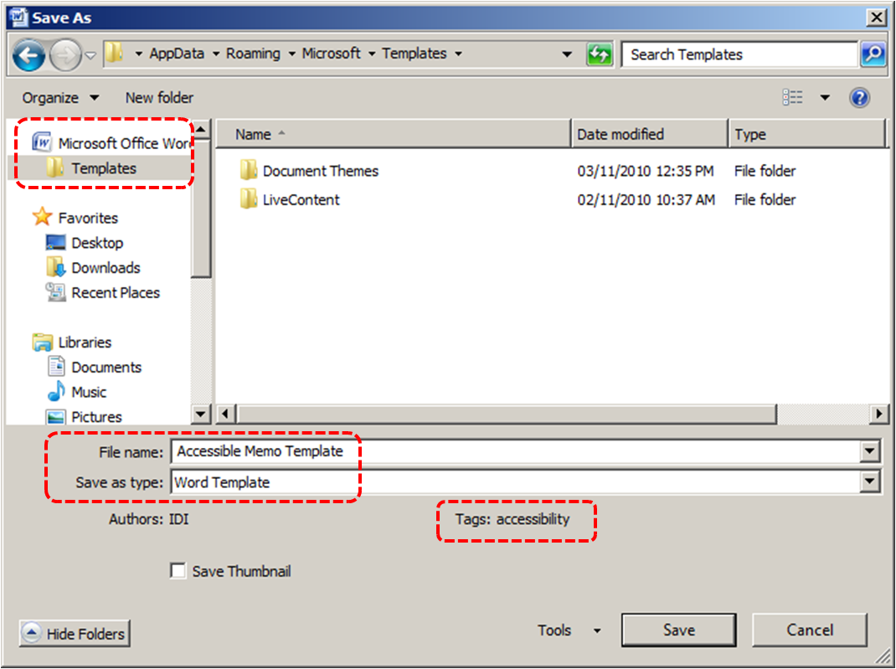
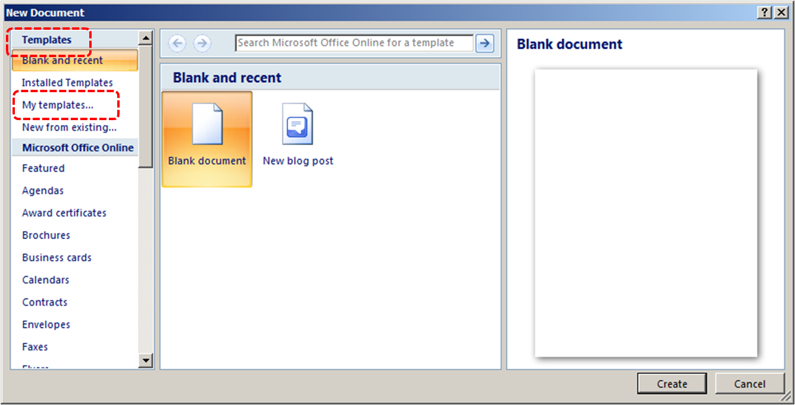
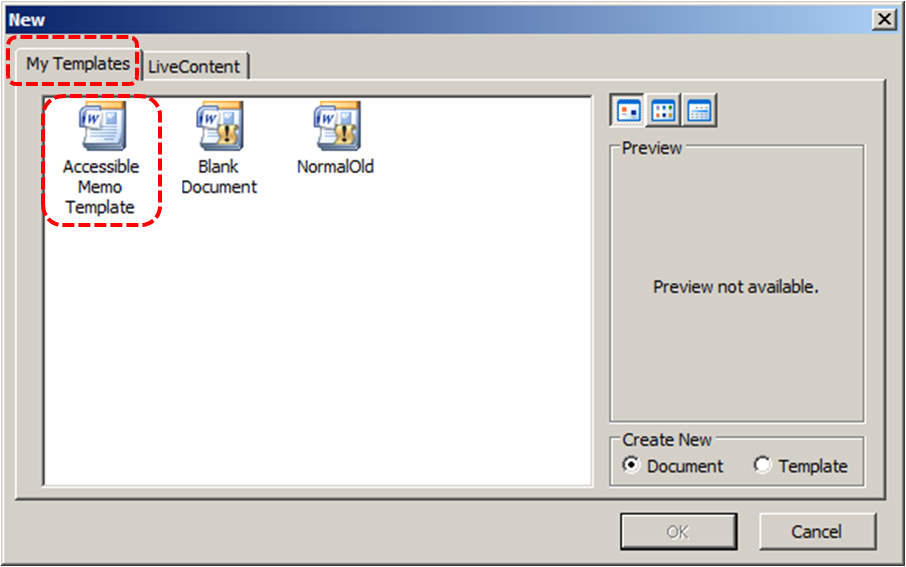
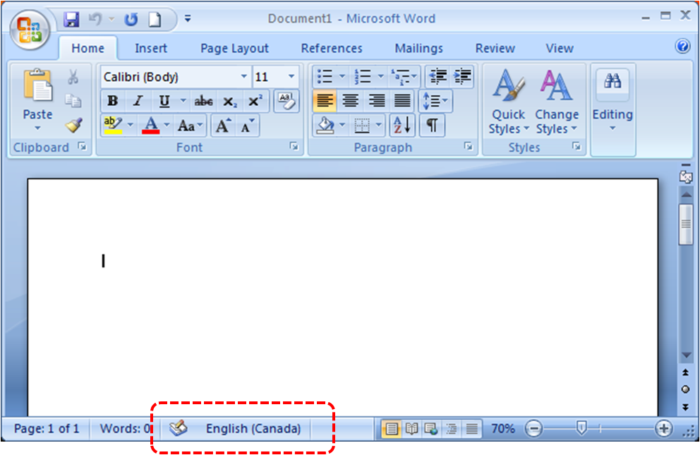
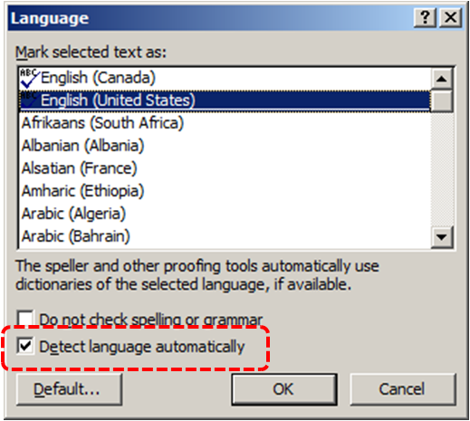
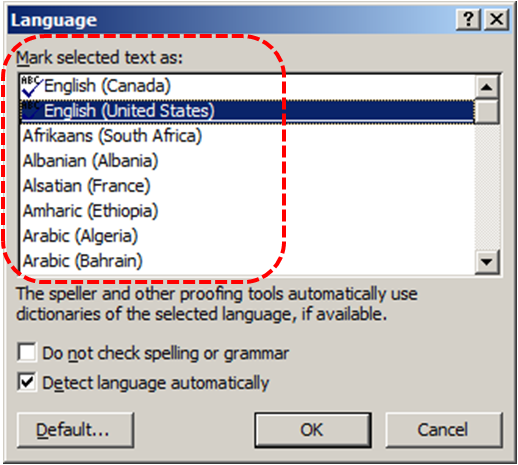
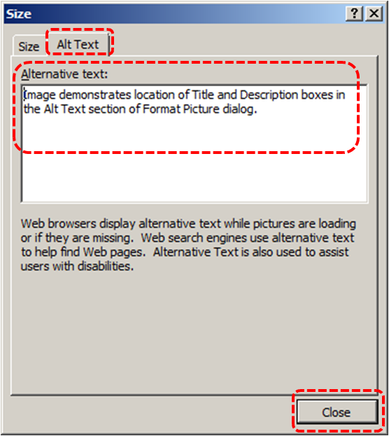
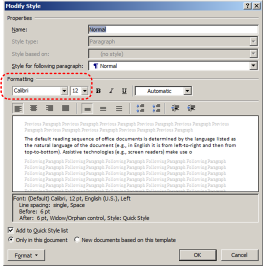
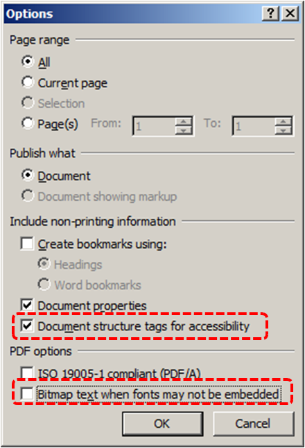

Authoring Techniques for Accessible Office Documents: Word 2007
Quick Reference
- Technique 1. Use Accessible Templates
- Technique 2. Specify Document Language
- Technique 3. Provide Text Alternatives for Images and Graphical Objects
- Technique 4. Avoid "Floating" Elements
- Technique 5. Use Headings
- Technique 6. Use Built-In Document Structuring Features
- Technique 7. Create Accessible Charts
- Technique 8. Make Content Easier to See
- Technique 9. Make Content Easier to Understand
- Technique 10. Check Accessibility
- Technique 11. Use Accessibility Features when Saving/Exporting to Other Formats
- Technique 12. Consider Using Accessibility Support Applications/Plugins
- Accessibility Help
Go to Usage Notes
Technique 1. Use Accessible Templates
All office documents start with a template, which can be as simple as a blank standard-sized page or as complex as a nearly complete document with text, graphics and other content. For example, a "Meeting Minutes" template might include headings for information relevant to a business meeting, such as "Actions" above a table with rows to denote time and columns for actions of the meeting.
Because templates provide the starting-point for so many documents, accessibility is critical. If you are unsure whether a template is accessible, you should check a sample document produced when the template is used (See Accessibility Checking, below).
Word 2007’s default template for new documents is a blank page. The basic installation also includes blank business card, blank label templates, and other blank office-related documents. These are all accessible by virtue of being blank.
It is possible to create your own accessible templates from scratch in Word 2007. As well, you can edit and modify the existing prepackaged templates, ensuring their accessibility as you do so and saving them as a new template.
To create an accessible template
- Create a new document (from the default blank template or from one of the prepackaged templates)
- Ensure that you follow the techniques in this document
- When you are finished you should also check the accessibility of the document (See Technique 10, below)
- Go to menu item: Office > Save As > Word Template
- Save the template in the Microsoft > Templates folder
- In the File name box, type a name for the template. Using a descriptive File name (e.g., "Accessible Memo Template") may increase the prominence of the accessibility status. As well, filling in the text box labeled Tags with the term "accessibility" may improve its searchability as an accessible file.
- Select Save

To select an accessible template
Note: Only use these steps if you have an accessible template available (e.g. that you previously saved). Otherwise, simply open a new (blank) document.
- Go to menu item: Office > New
- Under Templates, select My templates…
 - In the New document dialog, select your accessible template from the list in the My Templates tab
 - Select OK
- A new document based on the template will be displayed. If you have chosen an accessible template, the document will be accessible at this point. As you add your content (e.g., text, images, etc.), ensure that you consult the sections that follow to preserve accessibility.
Technique 2. Specify Document Language
In order for assistive technologies (e.g., screen readers) to be able to present your document accurately, it is important to indicate the natural language of the document. If a different natural language is used for a paragraph or selected text, this also needs to be clearly indicated.
To change the default language
- In the operating system, activate the keyboard layout for the language in which you want to create and edit text
- Right-click* the status bar at the bottom of the window, ensure that Language is selected, this displays a reminder of the active keyboard layout in the status bar

Word 2007 has an automatic language detection mechanism, which can automatically detect the language of your text. If you type a section of text in a different language than the rest of your document, Word 2007 will programmatically mark the language of that section of text appropriately.
To turn on automatic language detection
- Go to menu item: Review
- In the Proofing section, select the Set Language button
- In the Language dialog, select the Detect language automatically check box

To apply a language directly to selected text
- Select the text
- Go to menu item: Review
- In the Proofing section, select the Set Language button
- In the Mark selected text as box, select the language from the list
- Select OK

Technique 3. Provide Text Alternatives for Images and Graphical Objects
When using images or other graphical objects, such as charts and graphs, it is important to ensure that the information you intend to convey by the image is also conveyed to people who cannot see the image. This can be accomplished by adding concise alternative text to of each image. If an image is too complicated to concisely describe in the alternative text alone (artwork, flowcharts, etc.), provide a short text alternative and a longer description as well.
Tips for writing alternative text
- Try to answer the question "what information is the image conveying?"
- If the image does not convey any useful information, leave the alternative text blank
- If the image contains meaningful text, ensure all of the text is replicated
- Alternative text should be fairly short, usually a sentence or less and rarely more than two sentences
- If more description is required (e.g., for a chart or graph), provide a short description in the alternative text (e.g., a summary of the trend) and more detail in the long description, see below
- Test by having others review the document with the images replaced by the alternative text
Tips for writing longer descriptions
- Long descriptions should be used when text alternatives (see above) are insufficient to answer the question "what information is the image conveying?"
- In some situations, the information being conveyed will be how an image looks (e.g., an artwork, architectural detail, etc.). In these cases, try to describe the image without making too many of your own assumptions.
- One approach is to imagine you are describing the image to a person over the phone
- Ensure that you still provide concise alternative text to help readers decide if they are interested in the longer description
Alternatively, you can include the same information conveyed by the image within the body of the document, providing the images as an alternate to the text. In that case, you do not have to provide alternate text within the image.
To add alternative text to images and graphical objects
- Right-click* the object
- Select Size…
- Select the Alt Text tab in the Size dialog
- Fill in the Alternative Text
- Select Close

When inserting a very small image, or resizing a larger image to be much smaller, Word 2007 assumes that the image is intended to be a bullet-point for a bulleted list. Once Word 2007 defines the image as a bullet, the option to add alternative text disappears. Select Undo, to redefine the bullet as an image. When you right-click* the image, select Format Picture… and select the Alt Text tab in the Format Picture dialog. Alternative text can be found, or can be entered, into the Alternative text box.
Technique 4. Avoid "Floating" Elements
When images and objects are inserted into Word 2007 documents they default to being an "inline object". Inline objects keep their position on the page relative to a portion of the text. A "floating" object keeps its position relative to the page, while text flows around it. As content moves up or down on the page, the object stays where it was placed. To ensure that images and objects remain with the text that references it, always position it as an inline object.
Similarly, avoid placing drawing objects directly into the document (e.g., as borders, to create a diagram). Instead, create borders with page layout tools and insert complete graphical objects.
To prevent an image or object from "floating"
- Select the object
- Go to menu item: Page Layout
- Select Position from the Arrange section
- Select In Line with Text
Technique 5. Use Headings
Any documents that are longer than a few paragraphs require structuring to make them more straightforward for readers to understand. One of the easiest ways to do this is to use "True Headings" to create logical divisions between paragraphs. True headings are more than just bolded, enlarged, or centered text; they are structural elements that order and levels provide a meaningful sequence to users of assistive technologies.
Tips for headings
- Use the default headings styles provided ("Heading ", "Heading 2", etc.)
- Nest headings properly (e.g., the sub-headings of a "Heading 1" are "Heading 2", etc.)
- Do not skip heading levels
To apply headings using the Styles toolbar
- Select text
- Go to menu item: Home
- In the Styles section, select the heading you wish to apply
Note: You can scroll through the multiple heading styles using the arrows on the right side of the Styles section. You can also change the Style design by selecting the Change Styles button on the right.
To modify heading styles
- Go to menu item: Home
- In the Styles section, right-click* the style you wish to use from the Styles Gallery
- Select Modify
- In the Modify Style dialog, make the appropriate changes to style characteristics
- Select OK
To return to the default heading styles
- Go to menu item: Home
- In the Styles section, select Change Styles
- Select Style Set
- Select Word 2007 from the list
Technique 6. Use Built-In Document Structuring Features
6.1 Tables
When using tables, it is important to ensure that they are clear and appropriately structured. This helps all users to better understand the information in the table and allows assistive technologies (e.g., screen readers) to provide context so that the information within the table can be conveyed in a meaningful way.
Tips for tables
- Only use tables for tabular information, not for formatting, such as to position columns.
- Use "real tables" rather than text formatted to look like tables using the TAB key or space bar. These will not be recognized by assistive technology.
- Keep tables simple by avoiding merged cells and dividing complex data sets into separate smaller tables, where possible. Whenever possible, use just one row of headings.
- If tables split across pages, set the header to show at the top of each page. Also set the table to break between rows instead of in the middle of rows.
- Create a text summary of the essential table contents. Any abbreviations used should be explained in the summary.
- Table captions or descriptions should answer the question "what is the table's purpose and how is it organized?" (e.g., "A sample order form with separate columns for the item name, price and quantity").
- Table cells should be marked as table headers when they serve as labels to help interpret the other cells in the table.
- Table header cell labels should be concise and clear.
- Ensure the table is not "floating" on the page (see Technique 4).
To add a table with headings
- Go to menu item: Insert
- In the Tables section, select the Tables icon
- Select the number of rows and columns you would like your table to have
- Select the table and a Table Tools menu item should appear
- Go to menu item: Table Tools > Design
- In the Table Style Options section, select the Header Row check box
6.2. Lists
When you create lists, it is important to format them as "real lists". Otherwise, assistive technologies will interpret your list as a series of short separate paragraphs instead of a coherent list of related items.
To create an ordered or unordered list
- Go to menu item: Home
- In the Paragraph section, select the Bullets icon for unordered lists or select the Numbering icon for ordered lists
- To choose a different list format, select the arrow beside the icon
- Select a format from the format Library that appears in the drop-down menu
To modify list styles
- Go to menu item: Home
- In the Paragraph section, select the arrow beside the Bullets icon for unordered lists or select the arrow beside the Numbering icon for ordered lists
- Select Define New Bullet… to create a new unordered list format
- Select Define New Number Format… to create a new ordered list format
- In the New Bullet dialog or the New Number Format dialog, select the list characteristics
- Select OK
6.3 Columns
Use Columns feature for placing text in columns. However, because columns can be a challenge for users of some assistive technologies, you should consider whether a column layout is really necessary.
6.4 Page Breaks
Start a new page by inserting a page break instead of repeated hard returns.
6.5 Use a Table of Contents
Creating an index or table of contents to outline office document content can provide a means of navigating the meaningful sequence of content.
The best way to generate a table of contents is after applying the predefined heading styles, such as "Heading 1" as described above, to the headings that you want to include in your table of contents. After you apply these styles, you can then create a table of contents.
To insert a table of contents
- Place the cursor in your document where you want to create the table of contents
- Go to menu item: References
- In the Table of Contents section, select Table of Contents
- Select the style that you want to use
To update a table of contents
- Select the table
- Go to menu item: References
- In the Table of Contents section, select the Update Table button
6.6 Use Page Numbering
Numbering the pages of your document helps those reading and editing your document effectively navigate and reference its content. For users of assistive technologies, it provides a valuable point of reference within the document.
To insert page numbers
- Go to menu item: Insert
- In the Header & Footer section, select Page Number
- Select where you would like to insert your page numbers
- Select the style of page number you would like to use
To format page numbers
- Go to menu item: Insert
- In the Header & Footer section, select Page Number
- Select Format Page Numbers…
- In the Page Number Format dialog, select the page format characteristics you would like to use
Note: These changes are applied to the predefined page format styles. It does not create a new page format style.
6.7 Document Title
In case the document is ever converted into HTML, it should be given a descriptive and meaningful title.
To change the title of the current document
- Go to menu item: Office > Prepare > Properties
- In the Document Properties section that appears, select the Title text box
- Enter the Title
Note: The Title defined in the properties is different than the file name. It is also unrelated to the template name, discussed above.
Technique 7. Create Accessible Charts
Charts can be used to make data more understandable for some audiences. However, it is important to ensure that your chart is as accessible as possible to all members of your audience.
- All basic accessibility considerations that are applied to the rest of your document must also be applied to your charts and the elements within your charts. For example, use shape and color, rather than color alone, to convey information.
- When creating line charts, use the formatting options to create different types of dotted lines to facilitate legibility for users who are color blind.
- When creating bar charts, it is helpful to apply textures rather than colors to differentiate the bars
- Ensure that the contents are your chart are appropriate labeled to give users reference points that will help them to correctly interpret the information.
- Use the formatting options to change predefined colors, ensuring that they align with sufficient contrast requirements (see Technique 9.2)
- Consider providing the data that you used to create the chart in tabular form (e.g. as an appendix).
Technique 8. Make Content Easier to See
Here are some other things to keep in mind:
8.1 Format of Text
When formatting text, especially when the text is likely to printed, try to:
- Use font sizes between 12 and 18 points for body text.
- Use fonts of normal weight, rather than bold or light weight fonts. If you do choose to use bold fonts for emphasis, use them sparingly.
- Use standard fonts with clear spacing and easily recognized upper and lower case characters. Sans serif fonts (e.g., Arial, Verdana) may sometimes be easier to read than serif fonts (e.g., Times New Roman, Garamond).
- Avoid large amounts of text set all in caps, italic or underlined.
- Use normal or expanded character spacing, rather than condensed spacing.
- Avoid animated or scrolling text.
But can’t users just zoom in?Office applications do typically include accessibility features such as the ability to magnify documents and support for high contrast modes. However, because printing is an important aspect of many workflows and changing font sizes directly will change documents details such the pagination, the layout of tables, etc., it is best practice to always format text for a reasonable degree of accessibility.
To change the text size for a default named style
- Go to menu item: Home
- In the Styles section, right-click* the Style you wish to modify
- Select Modify Style
- Under Formatting in the Modify dialog box, select the appropriate font size
- Exit with OK

8.2 Use Sufficient Contrast
The visual presentation of text and images of text should have a contrast ration of at least 4.5:1. To help you determine the contrast, here are some examples on a white background:
- Very good contrast (Foreground=black, Background=white, Ratio=21:1)
- Acceptable contrast (Foreground=#767676, Background=white, Ratio=4.54:1)
- Unacceptable contrast (Foreground=#AAAAAA, Background=white, Ratio=2.32:1)
Also, always use a single solid color for a text background rather than a pattern.
In order to determine whether the colors in your document have sufficient contrast, you can consult an online contrast checker, such as:
- Juicy Studio: Luminosity Color Contrast Ratio Analyzer
- Joe Dolson Color Contrast Spectrum Tester
- Joe Dolson Color Contrast Comparison
8.3 Avoid Using Color Alone
Color should not be used as the only visual means of conveying information, indicating an action, prompting a response, or distinguishing a visual element. In order to spot where color might be the only visual means of conveying information, you can create a screenshot of the document and then view it with online gray-scale converting tools, such as:
8.4 Avoid Relying on Sensory Characteristics
The instructions provided for understanding and operating content should not rely solely on sensory characteristics such as the color or shape of content elements. Here are two examples:
- Do not track changes by simply changing the color of text you have edited and noting the color. Instead use Word 2007’s "Track Changes" feature to track changes.
- Do not distinguish between images by referring to their appearance (e.g. "the bigger one"). Instead, label each image with a figure number and use that for references.
8.5 Avoid Using Images of Text
Before you use an image to control the presentation of text (e.g., to ensure a certain font or color combination), consider whether you can achieve the same result by styling "real text". If this is not possible, as with logos containing stylized text, make sure to provide alternative text for the image following the techniques noted above.
Technique 9. Make Content Easier to Understand
9.1 Write Clearly
By taking the time to design your content in a consistent way, it will be easier to access, navigate and interpret for all users:
- Whenever possible, write clearly with short sentences.
- Introduce acronyms and spell out abbreviations.
- Avoid making the document too "busy" by using lots of whitespace and by avoiding too many different colors, fonts and images.
- If content is repeated on multiple pages within a document or within a set of documents (e.g., headings, footings, etc.), it should occur consistently each time it is repeated.
9.2 Provide Context for Hyperlinks
Hyperlinks are more effective navigation aids when the user understands the likely result of following the link. Otherwise, users may have to use trial-and-error to find what they need.
To help the user understand the result of selecting a hyperlink, ensure that the link makes sense when read in the context of the text around it. For example, while it would be confusing to use "more information" as a link by itself on a page, it would be fine to use "more information" as a link in the following sentence: "The airport can be reached by taxi or bus (more information)."
To make the address of hyperlink clear when printing, you may wish to include the address in brackets following the descriptive text of the hyperlink.
To add hyperlinks with meaningful text
- Type (or paste in) a web address and press spacebar or "Enter" to convert into a hyperlink
- Select the link and right-click*
- Select Edit Hyperlink (Ctrl + K)
- Edit the text in the Text to display box
Technique 10. Check Accessibility
At this time, Word 2007 does not offer a mechanism to check for potential accessibility errors in your document prior to publishing. [Tested: January 10th, 2011]
Technique 11. Use Accessibility Features when Saving/Exporting to Other Formats
In some cases, additional steps must be taken in order to ensure accessibility information is preserved when saving/exporting to formats other than the default.
PDF documents are not always accessible. Accessible PDF documents are often called "Tagged PDF" because they include "tags" that encode structural information required for accessibility. To evaluate the accessibility of your PDF document, see Technique 11 (above).
- Make sure the file is saved as a DOCX (Older DOC files are not compatible with the checker).
- Go to menu item: Office > Save As > PDF or XPS
- In the File name box, type a name for the file
- Select the Options button
- Under Include non-printing information, ensure that the Document structure tags for accessibility check box is selected
- Under PDF options, ensure that Bitmap text when fonts may not be embedded check box is de-selected
- Select OK and Save

HTML
- Go to menu item: Office > Save As > Other Formats
- In the File name box, type a name for the file
- In the Save as type box, select Web Page
- Select Save
- Check the HTML file for accessibility (see Technique 10, above)
To clean up your HTML file
- Remove unnecessary styles, line breaks, etc.
- Remove unnecessary id, class, and attributes
- Remove font tags
- Remove styles in the <head> tag
- Ensure the <th> tags have a scope attribute
- Remove <p> tags nested inside <th> and <td> tags
- Check for accessibility (see Technique 10, above)
Note: you may wish to use HTML editors or utilities to help with this process.
Technique 12. Consider Using Accessibility Support Applications/Plugins
Disclaimer: This list is provided for information purposes only. It is not exhaustive and inclusion of an application or plug-in on the list does not constitute a recommendation or guarantee of results.
Accessibility Help
If you are interested in what features are provided to make using Word 2007 more accessible to users, documentation is provided in the Help system:
- Select the Help icon from the right corner of the Toolbar or select F1
- Enter "Accessibility" as your search term in the Help dialog box
Usage Notes
At the time of testing (January 10, 2011), Word 2007 provides a set of accessibility features that is sufficient to enable the production of accessible digital office documents. However, Word 2007 does not include an accessibility checking feature.
This guide is intended to be used for documents that are:
- Intended to be used by people(i.e., not computer code),
- Text-based (i.e., not simply images, although they may contain images),
- Fully printable(i.e., where dynamic features are limited to automatic page numbering, table of contents, etc. and do not include audio, video, or embedded interactivity),
- Self-contained (i.e., without hyperlinks to other documents, unlike web content), and
- Typical of office-style workflows(Reports, letters, memos, budgets, presentations, etc.).
If you are creating forms, web pages, applications, or other dynamic and/or interactive content, these techniques will still be useful to you, but you should also consult the W3C-WAI Web Content Accessibility Guidelines (WCAG 2.0) because these are specifically designed to provide guidance for highly dynamic and/or interactive content.
File Formats
The default file format for Word 2007 is Office Open XML (DOCX).
In addition, Word 2007 offers many other word processor and web format saving options. Most of these have not been checked for accessibility.
Document Conventions
We have tried to formulate these techniques so that they are useful to all authors, regardless of whether they use a mouse. However, for clarity there are several instances where mouse-only language is used. Below are the mouse-only terms and their keyboard alternatives:
- *Right-click: To right-click with the keyboard, select the object using the Shift+Arrow keys and then press either (1) the "Right-Click" key (some keyboard have this to the right of the spacebar) or Shift+F10.
Disclaimer and Testing Details
- Following these techniques will increase the accessibility of your documents, but it does not guarantee accessibility to any specific disability groups. In cases where more certainty is required, it is recommended that you test the office documents with end users with disabilities, including screen reader users.
- The application-specific steps and screenshots in this document were created using Microsoft Word 2007 (ver.12.0.6545.5000, Windows 7, Jan. 2011) while creating a DOCX document. Files are also easily saved as other file formats (see Technique 11, below).
- This document is provided for information purposes only and is neither a recommendation nor a guarantee of results. If errors are found, please report them to: adod-comments@idrc.ocad.ca.
References and Resources
- Microsoft Word 2007 Help
Acknowledgments
Authors: Jan Richards, Sabrina Ruplall
This document was produced as part of the Accessible Digital Office Document (ADOD) Project. This project has been developed by the Inclusive Design Research Centre, OCAD University as part of an EnAbling Change Partnership project with the Government of Ontario and UNESCO (United Nations Educational, Scientific and Cultural Organization).


Accessible Digital Office Documents (ADOD) Project by Inclusive Design Research Centre (IDRC) is licensed under a Creative Commons Attribution-ShareAlike 3.0 Unported License.
Date of Current Version: 9 Dec 2014